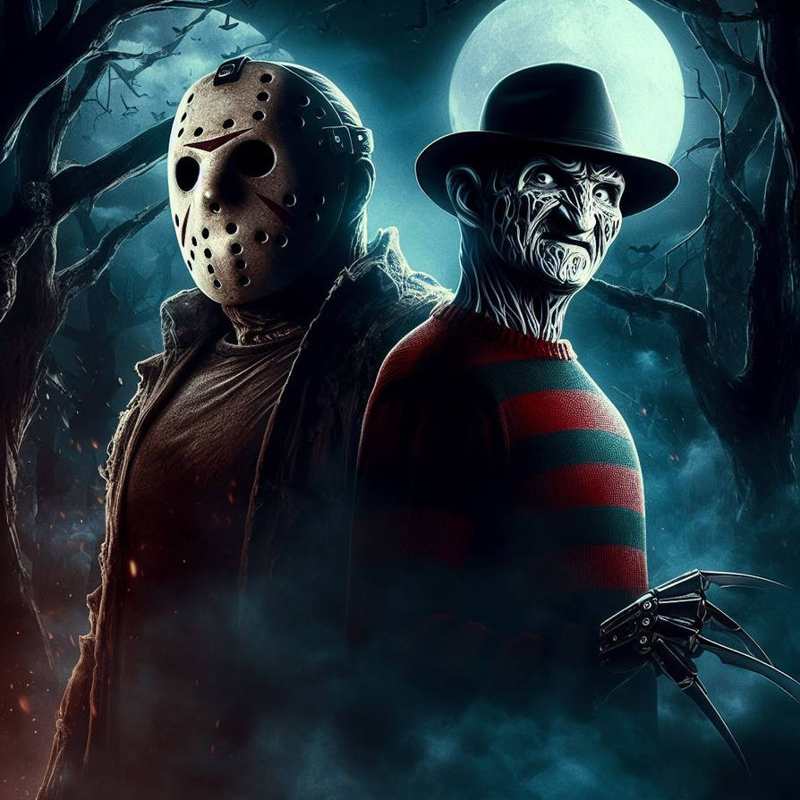
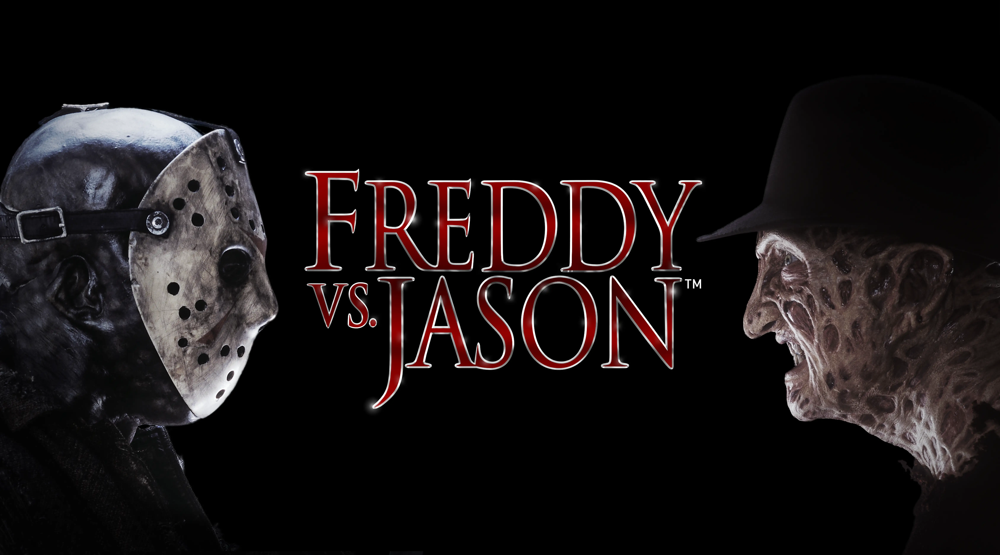

Jason vs Freddy
By Ronny Yu, 2003
Everyone must sleep
Freddy vs. Jason, is a 2003 American slasher movie. Directed by Ronny Yu, it is a crossover film combining two of the most successful horror franchises. It is also known as Friday the 13th Part XI and A Nightmare on Elm Street 8. In the series continuity of both franchises, this comes after Jason Goes to Hell: The Final Friday and Freddy's Dead: The Final Nightmare. The film would wind up being the highest grossing feature throughout the history of either character villain, and is the final film in the original series of both the Nightmare and Friday movies and in the original timeline. Afterward, the franchises returned as reboots/remakes in 2009's Friday the 13th and 2010's A Nightmare on Elm Street.
The Plot
After four years, Freddy Krueger is trapped in Hell. The town of Springwood has forgotten about him, robbing him of his power. He finds Jason Voorhees, disguises himself as Jason's mother, Pamela Voorhees and brings him back to life, telling him to kill some people on Elm Street. If enough fear is spread by Jason, Freddy will come back.
Meanwhile, Jason goes to Lori Campbell's house (where Nancy and Jesse used to live) where Lori, Kia, Gibb, Blake, and Trey are. Trey is Gibb's boyfriend and Kia wants Lori and Blake to be together which Lori doesn't like. After a while, Jason kills Trey and the police think that Freddy was the one who killed him. One of them mentions Freddy's name while Lori and Blake both hear the name.

At the police station, Lori falls asleep and is stalked by Freddy, but he's not strong enough to kill her yet. When Freddy attempts to kill Blake in his dream, his claw goes right through him without harming him at all. When Blake wakes up, he finds his father got his head cut off. After that, Jason kills Blake as well.
All the kids who made contact with Freddy were placed in Westin Hills where they are given Hypnocil to prevent them from dreaming. Among them are Mark Davis and Lori's boyfriend Will Rollins. Will saw Lori's dad (which it was Freddy and Will did not know it was him at the time) kill Lori's mother.
The next morning, the police blame the murders on Blake and say that he committed suicide after killing his father and Trey. Kia didn't believe them, and knows that they're lying. After Lori tells Kia and Gibb about her nightmare, Mark show up and tells Lori (and all the students) all about Freddy. Will comes and tells Mark to stop scaring Lori. Lori who is shocked from seeing Will passes out.
After the boys leave the school, Mark tells Will that Springwood covered up Freddy's existence and that everyone who made contact with him was locked up in Westin Hills, so no one else could get hurt or killed. At night, Mark realizes that he screwed up the town's plans by spreading enough fear about Freddy. At the Cornfield, Lori and the teenagers are having fun until Gibb falls asleep and is attacked by Freddy. Before Freddy can kill her, Jason kills her, along with a glowing raver who was going to rape Gibb in the real world.